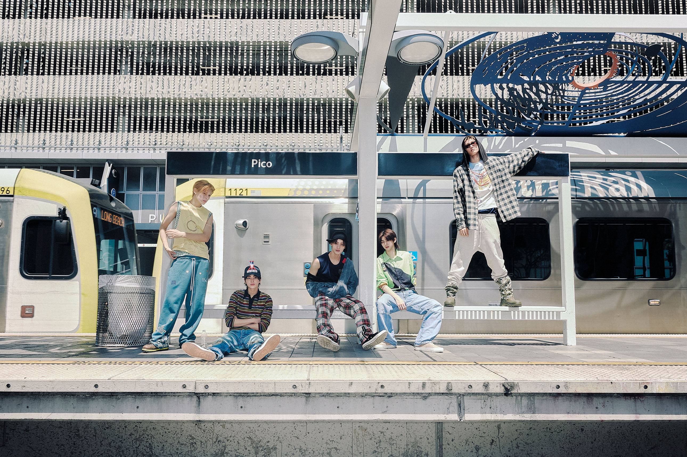

SECCIÓN 01
Laboratorios
Conoce los cinco laboratorios del liceo, sus características, equipos, sistemas operativos y ubicación.
Ver laboratorios →SITIO INFORMATIVO
Este sitio presenta información sobre los laboratorios de computación del liceo, sus características, ubicación y recursos disponibles para el desarrollo de actividades académicas.

Música utilizada como elemento complementario durante la navegación.
SOBRE ESTE SITIO
Los laboratorios son espacios destinados al aprendizaje práctico y al desarrollo de diferentes actividades relacionadas con la tecnología.
En este sitio se pueden consultar las características generales de los cinco laboratorios, sus equipos, sistemas operativos y ubicación dentro del liceo.
También se presenta información sobre la autora del proyecto, sus intereses, aprendizajes actuales y objetivos relacionados con su futuro académico.
EXPLORA EL SITIO
Utiliza las siguientes secciones para conocer los contenidos disponibles en este sitio web.
SECCIÓN 01
Conoce los cinco laboratorios del liceo, sus características, equipos, sistemas operativos y ubicación.
Ver laboratorios →SECCIÓN 02
Conoce a la autora del proyecto, sus intereses, aprendizajes y objetivos relacionados con su futuro profesional.
Conocer más →SECCIÓN 03
Si necesitas información adicional sobre el sitio o sus contenidos, puedes utilizar el formulario de contacto.
Ir a contacto →